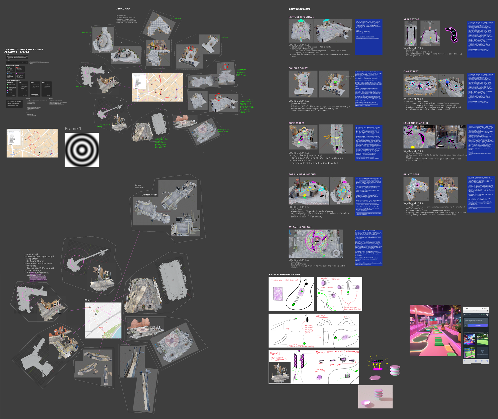
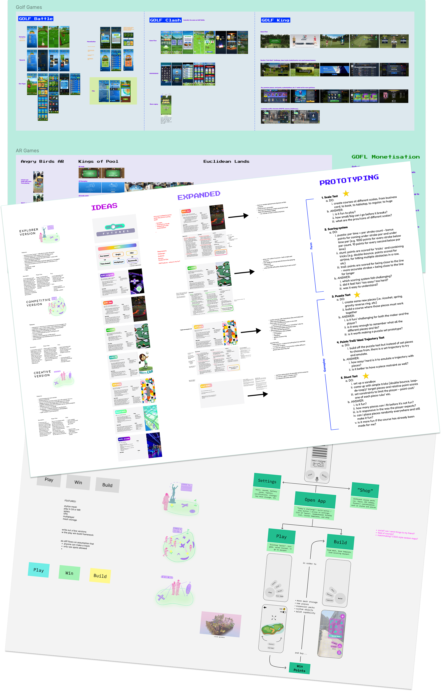

Tools: Unity, Niantic Lightship VPS, Premiere Pro, Figma
GOFL was my first project at Liquid City - an AR golf game that overlays custom courses onto real-world environments. As featured in UploadVR, the game "turns the city into a golf course", using physical features like stairs and ramps as actual gameplay elements. I was brought onto the team to help bring this concept from prototype to stakeholder demo.
My main responsibility was scouting locations across London to create a 9-hole tournament for our Niantic presentation. I'd find spaces with interesting topography, scan them using VPS technology, then import the meshes into Unity where I could design courses that worked with each location's natural features. The goal was finding spots that would both localize well and create engaging gameplay.

I created extensive video content using Premiere Pro to showcase GOFL's capabilities - everything from social media clips to client presentation materials. These videos were crucial for communicating how the game worked to both internal stakeholders and potential partners, since AR experiences are notoriously hard to convey through static images.
When T-Mobile showed interest in pop-up installations, I had to think beyond just the game mechanics. I considered store layouts, staffing requirements, and how to make the experience work in retail environments. Later, I worked on "GOFL World" - a separate initiative to transform the prototype into a scalable, monetizable game. This involved competitive research, multiplayer mechanics, and franchise potential.
